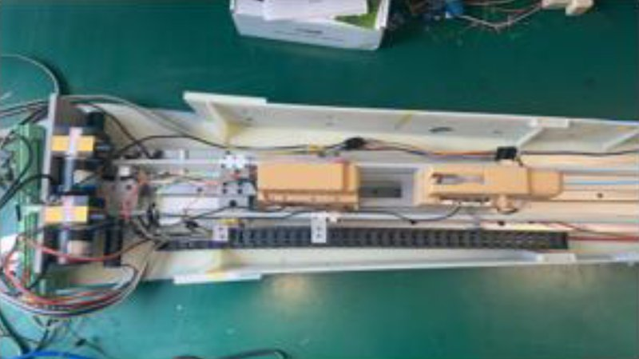

Academic bedside robots · soochow_yang2023
Soochow robot
Soochow University interventional surgical robot with catheter-tip thin-film force sensing

1 / 9


- Family
- Academic bedside robots (academic)
- Devices
- catheter and guidewire (separate clamping modules, yang2023_interventional Fig. 2 labels)
- Degrees of freedom
- N.R.
- Push
- Linear stage
- Twist
- Not reported
- Tested up to
- Phantom
- Sim-to-real
- None found — No simulation-trained controller found for this robot.
Testing
- Highest level
- Phantom
- What was tested
- vessel-model tests for environment classification (counts N.R. in the abstracts)
- Key numbers
- LSTM vascular-environment classification accuracy 94.2% (yang2023_interventional abstract); GA-optimised BP network reduces bending-recognition error by 37% (wei2022_intravascular abstract); EtherCAT motion control (Fig. 1)
Mechanism
- Push (translation)
- linear-stage+clamp
- Twist (rotation)
- N.R.
- Device range
- N.R.
- Target anatomy
- N.R. (DSA of cerebral vessels shown in the system schematic)
Sensing and interface
- Force sensing
- distal thin-film force sensor in the catheter head (insect-antenna inspired) + pressure sensor in the catheter clamping device (2023); strain gauges on the catheter (2022)
- Leader and haptics
- master with two knobs and touchscreen (yang2023_interventional Fig. 1); force feedback N.R.
- Imaging
- N.R.
- Sterility
- N.R.
Size
- Footprint (mm)
- N.R.
- Mass (kg)
- N.R.
Simulation
- Simulation model
- none found
- Sim-trained controller
- none found
Versions
- Lineage
- 2022 strain-gauge catheter bending recognition (wei2022_intravascular, abstract); 2022 vascular environment identification (yang2022_vascular, title); 2023 multi-data detection robot (yang2023_interventional, abstract + figures)
Sources
- An Interventional Surgical Robot Based on Multi-Data Detection · Applied Sciences, 2023 · doi:10.3390/app13095301 [yang2023_interventional]
- An Intravascular Catheter Bending Recognition Method for Interventional Surgical Robots · Machines, 2022 · doi:10.3390/machines10010042 [wei2022_intravascular]
- Vascular Environment Identification Based on Multi-dimensional Data Fusion for Interventional Surgical Robots · 2022 IEEE International Conference on Robotics and Biomimetics (ROBIO), 2022 · doi:10.1109/robio55434.2022.10011932 [yang2022_vascular]
Notes
- Notes
- Sharper photo in Fig. 2 carries red leader lines ending on the robot.
This record
- Read level
- abstract — abstract + figures
- Picture
- yang2023_interventional Fig. 1 right panel, https://mdpi-res.com/applsci/applsci-13-05301/article_deploy/html/images/applsci-13-05301-g001.png (page https://www.mdpi.com/2076-3417/13/9/5301) ↗ — licence: CC BY 4.0; grade C
- Picture changes
- cropped to the slave photo; not upscaled
- Found by
- gap: Gap searches for robots the other searches missed.
- Data
- JSON · YAML:
records/robots/soochow_yang2023.yaml - Correction
- Suggest a correction [repository not created yet]